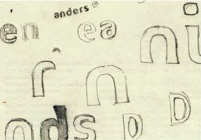
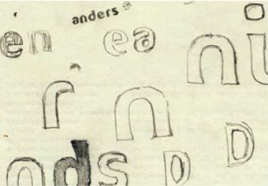

El diseñador de FF Cocon, Evert Bloemsma (1958-2005), lo describió como un "tipo de letra serio". A pesar de las primeras impresiones, la descripción se mantiene. Desde su lanzamiento en 2001, FF Cocon se ha utilizado en una variedad asombrosamente amplia de aplicaciones de diseño, se utiliza muchísimo en publicidad y, sobre todo para packaging. En tamaños grandes, FF Cocon funciona como un rostro de pantalla, con bellos detalles. Y en tamaños pequeños, sigue siendo sorprendentemente legible.

Evert Bloemsma
Evert Bloemsma se licenció en la Academia de Arte de Arnhem (Países Bajos) en 1981. Tras trabajar como impresor y diseñador gráfico en La Haya y Arnhem, se trasladó a Hamburgo para trabajar en la producción de fuentes digital en URW, los inventores del software Ikarus. Aquí también siguió trabajando en sus propios diseños tipográficos, entre los que destaca Balance. En 1990 y 1991 trabajó como tipógrafo en Océ van der Grinten, en Venlo (Países Bajos), donde participó en la producción del mapa de bits para impresoras láser fuentes y estudió el efecto de la salida de baja resolución en las formas de los tipos de letra. Desde 1991 trabaja como diseñador gráfico, tipógrafo y fotógrafo autónomo.
Su trabajo fotográfico se centra en fotos panorámicas de proyectos arquitectónicos; en 1990, realizó el diseño gráfico y la mayor parte de la fotografía de la exposición mundial Chandigarh, cuarenta años después de Le Corbusier. Además de diseñar sus propios tipos de letra, Evert Bloemsma ha participado en cuestiones técnicas relacionadas con la producción tipográfica para Monotype y FontShop. Evert Bloemsma ha escrito sobre arquitectura, diseño tipográfico y fotografía para revistas como Forum, Page, Graficus, Vormberichten, Prepress Magazine y Druk. Enseña diseño tipográfico en la Academia de Arte de Breda y Arnhem.
 
